윈도7은 기본적으로 시각장애인들이 주로 사용하는 문서, 컴퓨터, 네트워크 환경 등의 아이콘을 바탕화면에 표시하지 않기 때문에, 이들 아이콘의 사용을 위해서는 다음의 설정이 필요합니다.
① 바탕화면에 위치한 이후 <Alt-키패드 7번> 키를 눌러 화면 좌상단으로 이동합니다.
② 마우스 오른쪽 버튼 클릭 기능(키패드 *)을 실행하여 팝업 메뉴를 활성화합니다.
③ <위/아래 화살표> 키를 이용하여 '개인 설정' 메뉴 항목을 찾아 실행합니다.
④ 개인 설정창이 나타나면 <Tab> 키를 여러 번 눌러 '바탕 화면 아이콘 변경' 항목을 찾아 <Enter> 키를 누릅니다.
⑤ '바탕화면 아이콘 설정' 대화상자가 나타나면 <위/아래 화살표> 키를 이용하여 아이콘 항목을 찾고 표시를 원하는 아이콘에서 <Space> 키를 눌러 체크박스를 선택해 줍니다.(문서의 경우 윈도7에서는 사용자
계정 이름으로 표시됩니다.)
⑥ '확인' 버튼을 눌러 설정을 적용합니다.
또한, 바탕화면에 인터넷 익스플로러 아이콘을 표시하려면 다음의 방법을 사용합니다.
① 시작 버튼을 눌러 메뉴를 열고 <위 화살표> 키를 한 번 눌러 '모든 프로그램' 트리뷰까지 이동합니다.
② <오른쪽 화살표> 키를 한 번 누른 후 'Internet Explorer' 항목이 나올 때까지 <아래 화살표> 키를 누릅니다.
③ 팝업 메뉴를 열고 [보내기] 메뉴 항목을 찾아 <Enter> 키를 누릅니다.(이 때 팝업 메뉴의 활성을 음성출력하지 못함으로 주의를 바랍니다.)
④ 하위 메뉴가 활성화되면 [바탕 화면에 바로 가기 만들기] 항목을 찾아 다시 <Enter> 키를 누릅니다. 그러면 바탕화면에 인터넷 익스플로러 아이콘이 생성됩니다.
센스리더의 읽기포인터 기능을 최적으로 사용하려면 윈도7에서 화면 디자인을 위해 사용하고 있는 다양한 시각효과를 해제하고 사용하는 것이 좋습니다.
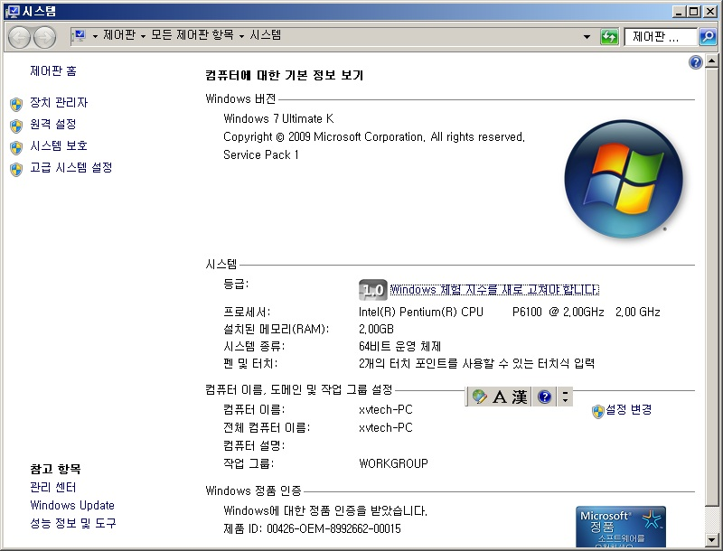
아래 방법에 따라 시각효과를 '최적 성능으로'로 변경해 줍니다.
① 바탕화면에서 '컴퓨터' 항목에 위치한 다음 팝업 메뉴를 엽니다.
② <위/아래 화살표> 키를 이용하여 [속성] 항목을 찾아 실행합니다.
③ <Tab> 키를 연속해서 눌러 '고급 시스템 설정' 항목을 찾아 실행합니다.
④ '시스템 속성' 대화상자가 나타나면 처음 위치한 '설정(S)' 버튼을 <Space> 키를 사용하여 실행합니다.
⑤ 잠시 후 '성능 옵션' 대화상자가 나타나면 <위/아래 화살표> 키를 이용하여 '최적 성능으로' 옵션을 선택합니다.
⑥ '확인' 버튼을 눌러 설정을 적용합니다.
⑦ 다시 시스템 속성 대화상자로 나오면 '확인' 버튼을 누릅니다.
*좀 더 정확한 읽기포인터의 동작을 위해 시각효과 설정과 더불어 센스리더 설치
이후 <Ctrl+Alt+Shift+V> 키를 눌러 '비디오 디바이스 모드'를 선택해 주도록 합니다.(센스리더
일반 메뉴에 위치)
센스리더를 사용해 윈도우즈를 이용할 때는 단축키를 많이 사용함으로 오른쪽 컨트롤과 알트키의 사용을 위해 키보드 드라이버를 '한글 103/106키'로 변경해 주는 것이 편리합니다.
다음의 절차에 따라 드라이버를 변경할 수 있습니다.
① 바탕화면의 '컴퓨터' 아이콘에서 <PopUp> 키를 눌러 메뉴를 활성화한 다음 [속성] 메뉴를 실행합니다.
② <tab> 키를 반복해서 눌러 '장치관리자'를 찾은 다음 <Enter> 키를 누릅니다.
③ 장치관리자가 열리면 <Tab> 키를 한 번 눌러 트리뷰로 이동한 다음 <아래 화살표> 키를 계속 눌러 '키보드' 항목까지 이동합니다.
④ <오른쪽 화살표> 키를 한 번 눌러 키보드 항목을 확장시킨 다음 <아래 화살표> 키를 눌러 현재 설치된 키보드 드라이버에 위치합니다.
⑤ <PopUp> 메뉴를 열고 [드라이버 소프트웨어 업데이트] 항목을 실행합니다.
⑥ 업데이트 창이 열리면 <Tab> 키를 눌러 '컴퓨터에서 드라이버 소프트웨어 찾아보기' 버튼을 찾아 <Enter> 키를 누릅니다.
⑦ 화면이 변경되면 <Tab> 키를 세 번 정도 눌러 '컴퓨터의 장치 드라이버 목록에서 직접 선택' 버튼까지 이동한 후, <Enter> 키를 누릅니다.
⑧ <Space> 키를 눌러 '호환 가능한 하드웨어 표시' 체크상자의 선택을 해제한 후 <Tab> 키를 눌러 제조사 목록에서 '표준 키보드'를 선택합니다.
⑨ 다시 <Tab> 키를 눌러 키보드 종류 목록 상자로 이동한 다음 '한글 PS/2 키보드/USB 키보드(103/106키)' 항목을 선택하고 '다음' 버튼을 누릅니다.
⑩ 드라이버 호환성 경고 대화상자가 나타나면 '예' 버튼을 누릅니다. 경고가 다시 나타나는 경우가 있는데 이 때도 '예' 버튼을 다시 한 번 누릅니다.
⑪ 드라이버 설치 완료와 재부팅을 알리는 메시지가 출력되면 '마침' 버튼을 눌러 드라이버 설치를 완료합니다. 컴퓨터가 재부팅된 이후 오른쪽 Ctrl 키와 Alt 키가 정상 동작합니다.
윈도7의 '사용자 계정 컨트롤' 기능은 컴퓨터를 해킹이나 바이러스로부터 보호해 주지만 사용자에게 불편함을 줄 수도 있습니다. 이 기능의 활성화로 인해 컴퓨터 사용이 불편하다면 아래 방법에 따라 설정을 변경합니다.
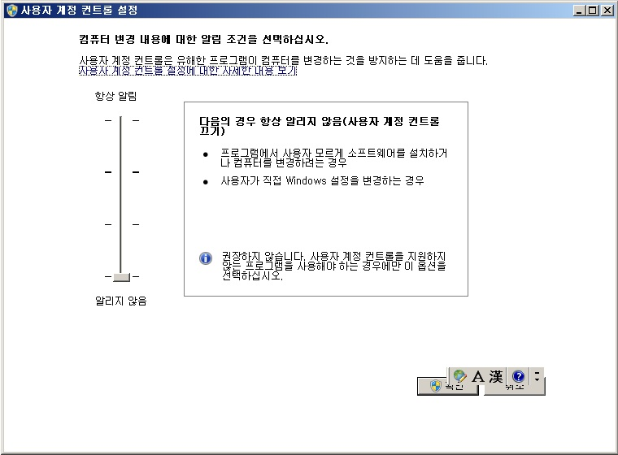
① 바탕화면이나 시작 메뉴에서 '제어판'을 찾아 실행합니다.
② <Tab> 키를 반복해서 눌러 '사용자 계정 및 가족 보호' 항목을 찾아 <Enter> 키를 누릅니다.
③ 같은 방법으로 '사용자 계정' 항목과 '사용자 계정 컨트롤 설정 변경' 항목을 차례대로 찾아 실행합니다.
④ 설정 변경 창이 열리면 <Tab> 키를 한 번 눌러 '알림 수준' 슬라이더까지 이동합니다.
⑤ <아래 화살표> 키를 반복해서 눌러 알림 수준을 사용자가 원하는 대로 설정합니다. 슬라이더를 '3/3'까지 내리면 해당 기능을 완전히 정지합니다.
⑥ 설정을 변경한 후에는 '확인' 버튼을 누르고 창을 모두 닫습니다.
⑦ 컴퓨터를 다시 시작하여 변경된 설정을 적용합니다.
윈도8.1은 기본적으로 시각장애인들이 주로 사용하는 문서, 컴퓨터, 네트워크 환경 등의 아이콘을 바탕화면에 표시하지 않기 때문에, 이들 아이콘의 사용을 위해서는 다음의 설정이 필요합니다.
① 바탕화면에 위치한 이후 <Alt-Np7> 키를 눌러 화면 좌상단으로 이동합니다.
② 마우스 오른쪽 버튼 클릭 기능(Np*)을 실행하여 팝업 메뉴를 활성화합니다.
③ <위/아래 화살표> 키를 이용하여 '개인 설정' 메뉴 항목을 찾아 실행합니다.
④ 개인 설정창이 나타나면 <Tab> 키를 여러 번 눌러 '바탕 화면 아이콘 변경' 항목을 찾아 <Enter> 키를 누릅니다.
⑤ '바탕화면 아이콘 설정' 대화상자가 나타나면 <위/아래 화살표> 키를 이용하여 아이콘 항목을 찾고 표시를 원하는 아이콘에서 <Space> 키를 눌러 체크박스를 선택해 줍니다.(문서의 경우 윈도8.1에서는 사용자
계정 이름으로 표시됩니다.)
⑥ '확인' 버튼을 눌러 설정을 적용합니다.
센스리더의 읽기포인터 기능을 최적으로 사용하려면 윈도8.1에서 화면 디자인을 위해 사용하고 있는 다양한 시각효과를 해제하고 사용하는 것이 좋습니다.
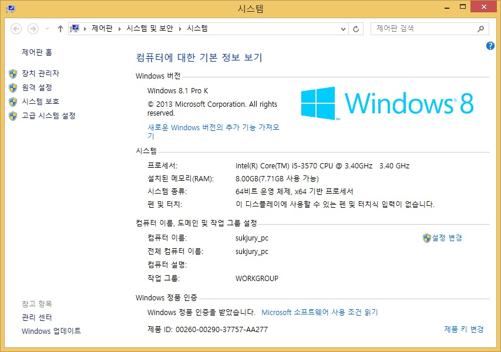
아래 방법에 따라 시각효과를 '최적 성능으로'로 변경해 줍니다.
① 바탕화면에서 '내PC' 항목에 위치한 다음 팝업 메뉴를 엽니다.
② <위/아래 화살표> 키를 이용하여 [속성] 항목을 찾아 실행합니다.
③ <Tab> 키를 연속해서 눌러 '고급 시스템 설정' 항목을 찾아 실행합니다.
④ '시스템 속성' 대화상자가 나타나면 처음 위치한 '설정(S)' 버튼을 <Space> 키를 사용하여 실행합니다.
⑤ 잠시 후 '성능 옵션' 대화상자가 나타나면 <위/아래 화살표> 키를 이용하여 '최적 성능으로' 옵션을 선택합니다.
⑥ '확인' 버튼을 눌러 설정을 적용합니다.
⑦ 다시 시스템 속성 대화상자로 나오면 '확인' 버튼을 누릅니다.
센스리더를 사용해 윈도우즈를 이용할 때는 단축키를 많이 사용함으로 오른쪽 컨트롤과 알트키의 사용을 위해 키보드 드라이버를 '한글 103/106키'로 변경해 주는 것이 편리합니다.
다음의 절차에 따라 드라이버를 변경할 수 있습니다.
① 바탕화면의 '내PC' 아이콘에서 <PopUp> 키를 눌러 메뉴를 활성화한 다음 [속성] 메뉴를 실행합니다.
② <tab> 키를 반복해서 눌러 '장치관리자'를 찾은 다음 <Enter> 키를 누릅니다.
③ 장치관리자가 열리면 <Tab> 키를 한 번 눌러 트리뷰로 이동한 다음 <아래 화살표> 키를 계속 눌러 '키보드' 항목까지 이동합니다.
④ <오른쪽 화살표> 키를 한 번 눌러 키보드 항목을 확장시킨 다음 <아래 화살표> 키를 눌러 현재 설치된 키보드 드라이버에 위치합니다.
⑤ <PopUp> 메뉴를 열고 [드라이버 소프트웨어 업데이트] 항목을 실행합니다.
⑥ 업데이트 창이 열리면 <Tab> 키를 눌러 '컴퓨터에서 드라이버 소프트웨어 찾아보기' 버튼을 찾아 <Enter> 키를 누릅니다.
⑦ 화면이 변경되면 <Tab> 키를 세 번 정도 눌러 '컴퓨터의 장치 드라이버 목록에서 직접 선택' 버튼까지 이동한 후, <Enter> 키를 누릅니다.
⑧ <Space> 키를 눌러 '호환 가능한 하드웨어 표시' 체크상자의 선택을 해제한 후 <Tab> 키를 눌러 제조사 목록에서 '표준 키보드'를 선택합니다.
⑨ 다시 <Tab> 키를 눌러 키보드 종류 목록 상자로 이동한 다음 '한글 PS/2 키보드/USB 키보드(103/106키)' 항목을 선택하고 '다음' 버튼을 누릅니다.
⑩ 드라이버 호환성 경고 대화상자가 나타나면 '예' 버튼을 누릅니다. 경고가 다시 나타나는 경우가 있는데 이 때도 '예' 버튼을 다시 한 번 누릅니다.
⑪ 드라이버 설치 완료와 재부팅을 알리는 메시지가 출력되면 '마침' 버튼을 눌러 드라이버 설치를 완료합니다. 컴퓨터가 재부팅된 이후 오른쪽 Ctrl 키와 Alt 키가 정상 동작합니다.
윈도8.1의 '사용자 계정 컨트롤' 기능은 컴퓨터를 해킹이나 바이러스로부터 보호해 주지만 사용자에게 불편함을 줄 수도 있습니다. 이 기능의 활성화로 인해 컴퓨터 사용이 불편하다면 아래 방법에 따라 설정을 변경합니다.
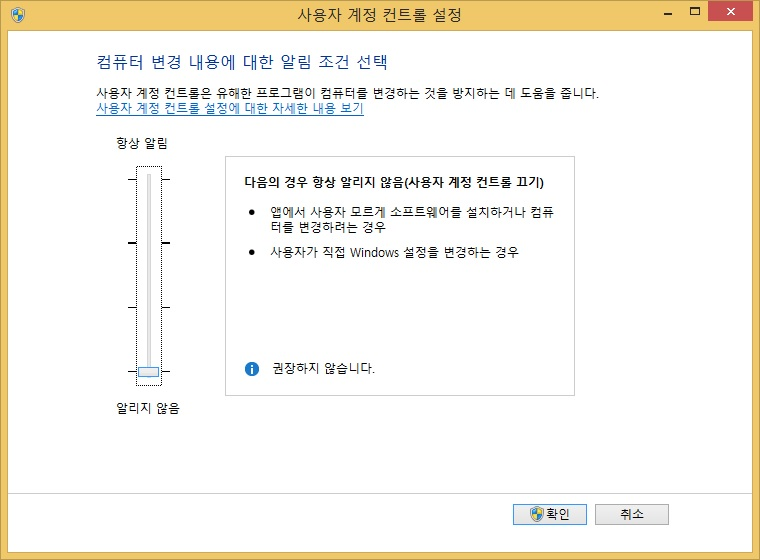
윈도8.1에서 파일 삭제시 사용자에게 묻지 않고 바로 휴지통으로 보내 버리기 때문에 초보 사용자의 키보드 사용 미숙으로 곤란을 겪는 경우가 많습니다.
기존 윈도 XP나 7처럼 사용자에게 확인 과정을 거치도록 하기 위해 다음과 같은 설정을 진행 합니다.
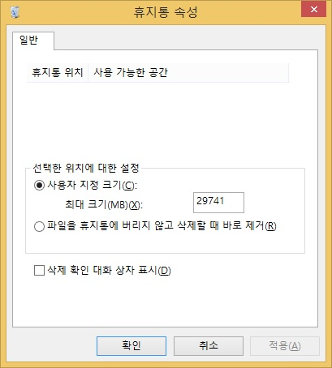
윈도 탐색기는 기본적으로 행과 열 구조의 큰 아이콘 형태로 파일을 표시하며, 확장자를 표시하지 않아 시각장애인이 탐색기를 활용하는 데 어려움이 많습니다. 다음의 순서에 따라 탐색기의 인터페이스를 변경해 주면 편리하게 탐색기를 활용할 수 있습니다.
① 바탕화면에서 "내PC" 아이콘을 찾아 실행한 다음 <Alt>키를 눌러 "응용프로그램"메뉴를 호출 합니다.
② <V>키를 눌러 보기 메뉴를 호출한 후 아래에 안내 된 단축키를 활용하여 필요한 부분을 적용 합니다.
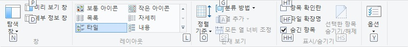
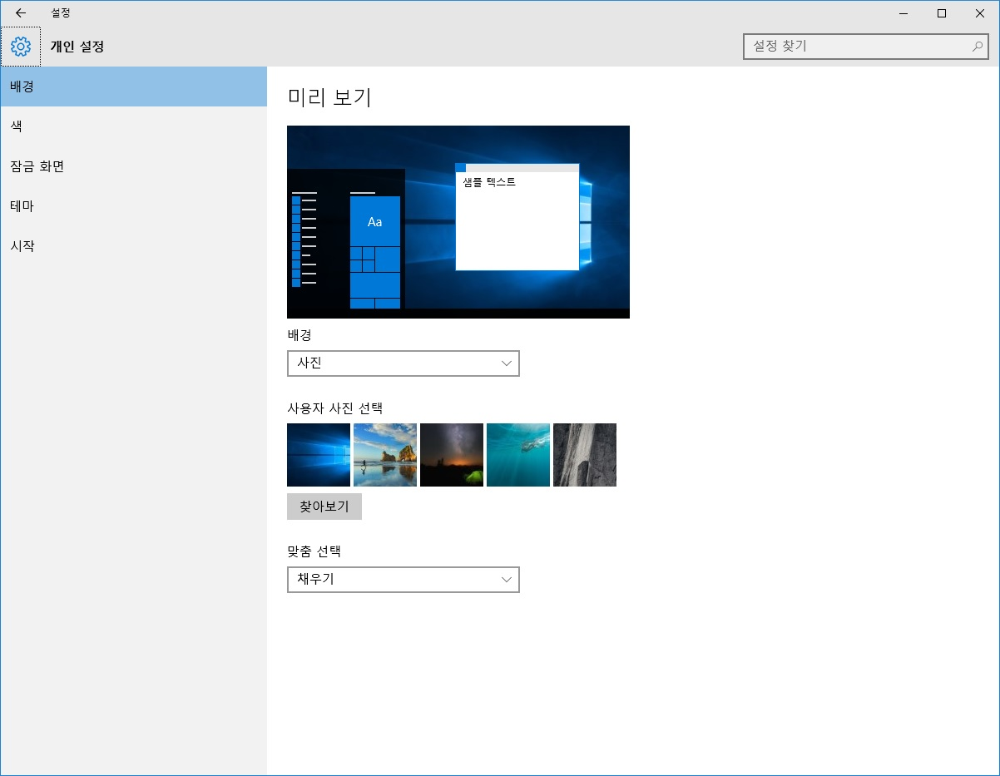
윈도10은 기본적으로 시각장애인들이 주로 사용하는 문서, 컴퓨터, 네트워크 환경 등의 아이콘을 바탕화면에 표시하지 않기 때문에, 이들 아이콘의 사용을 위해서는 다음의 설정이 필요합니다.
① 바탕화면에 위치한 이후 <Alt-Np7> 키를 눌러 화면 좌상단으로 이동합니다.
② 마우스 오른쪽 버튼 클릭 기능(Np*)을 실행하여 팝업 메뉴를 활성화합니다.
③ <위/아래 화살표> 키를 이용하여 '개인 설정' 메뉴 항목을 찾아 실행합니다.
④ 개인 설정창이 나타나면 <Tab> 키를 한번 눌러 홈 버튼으로 이동 합니다.
⑤ 아래 방향키를 이용하여 <테마 버튼>으로 이동하여 엔터를 누릅니다.
⑥ <Tab>키를 여러번 눌러 <바탕 화면 아이콘 설정 링크>으로 이동하여 엔터를 누릅니다.
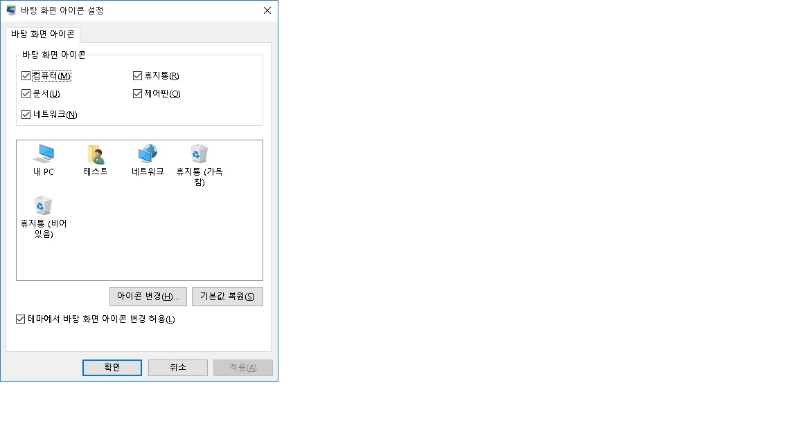
센스리더의 읽기포인터 기능을 최적으로 사용하려면 윈도10에서 화면 디자인을 위해 사용하고 있는 다양한 시각효과를 해제하고 사용하는 것이 좋습니다.
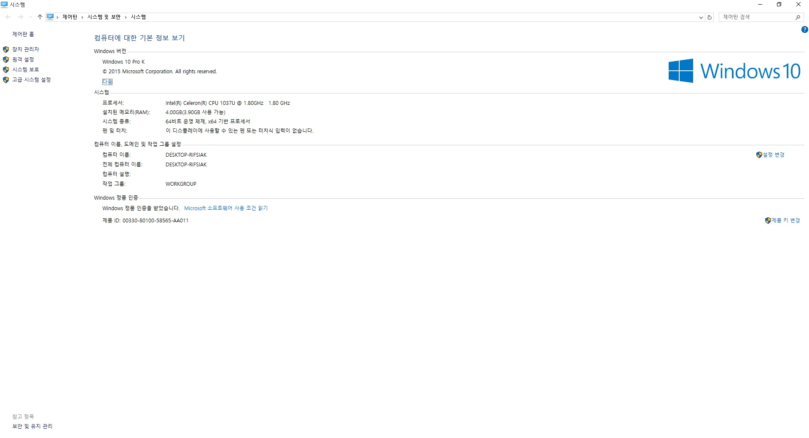
아래 방법에 따라 시각효과를 '최적 성능으로'로 변경해 줍니다.
① 바탕화면에서 '내PC' 항목에 위치한 다음 팝업 메뉴를 엽니다.
② <위/아래 화살표> 키를 이용하여 [속성] 항목을 찾아 실행합니다.
③ <Tab> 키를 연속해서 눌러 '고급 시스템 설정' 항목을 찾아 실행합니다.
④ '시스템 속성' 대화상자가 나타나면 처음 위치한 '설정(S)' 버튼을 <Space> 키를 사용하여 실행합니다.
⑤ 잠시 후 '성능 옵션' 대화상자가 나타나면 <위/아래 화살표> 키를 이용하여 '최적 성능으로' 옵션을 선택합니다.
⑥ '확인' 버튼을 눌러 설정을 적용합니다.
⑦ 다시 시스템 속성 대화상자로 나오면 '확인' 버튼을 누릅니다.
센스리더를 사용해 윈도우즈를 이용할 때는 단축키를 많이 사용함으로 오른쪽 컨트롤과 알트키의 사용을 위해 키보드 드라이버를 '한글 103/106키'로 변경해 주는 것이 편리합니다.
다음의 절차에 따라 드라이버를 변경할 수 있습니다.
① 바탕화면의 '내PC' 아이콘에서 <PopUp> 키를 눌러 메뉴를 활성화한 다음 [속성] 메뉴를 실행합니다.
② <tab> 키를 반복해서 눌러 '장치관리자'를 찾은 다음 <Enter> 키를 누릅니다.
③ 장치관리자가 열리면 <Tab> 키를 한 번 눌러 트리뷰로 이동한 다음 <아래 화살표> 키를 계속 눌러 '키보드' 항목까지 이동합니다.
④ <오른쪽 화살표> 키를 한 번 눌러 키보드 항목을 확장시킨 다음 <아래 화살표> 키를 눌러 현재 설치된 키보드 드라이버에 위치합니다.
⑤ <PopUp> 메뉴를 열고 [드라이버 소프트웨어 업데이트] 항목을 실행합니다.
⑥ 업데이트 창이 열리면 <Tab> 키를 눌러 '컴퓨터에서 드라이버 소프트웨어 찾아보기' 버튼을 찾아 <Enter> 키를 누릅니다.
⑦ 화면이 변경되면 <Tab> 키를 세 번 정도 눌러 '컴퓨터의 장치 드라이버 목록에서 직접 선택' 버튼까지 이동한 후, <Enter> 키를 누릅니다.
⑧ <Space> 키를 눌러 '호환 가능한 하드웨어 표시' 체크상자의 선택을 해제한 후 <Tab> 키를 눌러 제조사 목록에서 '표준 키보드'를 선택합니다.
⑨ 다시 <Tab> 키를 눌러 키보드 종류 목록 상자로 이동한 다음 '한글 PS/2 키보드/USB 키보드(103/106키)' 항목을 선택하고 '다음' 버튼을 누릅니다.
⑩ 드라이버 호환성 경고 대화상자가 나타나면 '예' 버튼을 누릅니다. 경고가 다시 나타나는 경우가 있는데 이 때도 '예' 버튼을 다시 한 번 누릅니다.
⑪ 드라이버 설치 완료와 재부팅을 알리는 메시지가 출력되면 '마침' 버튼을 눌러 드라이버 설치를 완료합니다. 컴퓨터가 재부팅된 이후 오른쪽 Ctrl 키와 Alt 키가 정상 동작합니다.
윈도10의 '사용자 계정 컨트롤' 기능은 컴퓨터를 해킹이나 바이러스로부터 보호해 주지만 사용자에게 불편함을 줄 수도 있습니다. 이 기능의 활성화로 인해 컴퓨터 사용이 불편하다면 아래 방법에 따라 설정을 변경합니다.
윈도10에서 파일 삭제시 사용자에게 묻지 않고 바로 휴지통으로 보내 버리기 때문에 초보 사용자의 키보드 사용 미숙으로 곤란을 겪는 경우가 많습니다.
기존 윈도 XP나 7처럼 사용자에게 확인 과정을 거치도록 하기 위해 다음과 같은 설정을 진행 합니다.
윈도 탐색기는 기본적으로 행과 열 구조의 큰 아이콘 형태로 파일을 표시하며, 확장자를 표시하지 않아 시각장애인이 탐색기를 활용하는 데 어려움이 많습니다. 다음의 순서에 따라 탐색기의 인터페이스를 변경해 주면 편리하게 탐색기를 활용할 수 있습니다.
① 바탕화면에서 "내PC" 아이콘을 찾아 실행한 다음 <Alt>키를 눌러 "응용프로그램"메뉴를 호출 합니다.
② <V>키를 눌러 보기 메뉴를 호출한 후 아래에 안내 된 단축키를 활용하여 필요한 부분을 적용 합니다.
윈도10은 기존 윈도와 달리 인터넷 기본 브라우저가 익스플로러가 아닌 <마이크로소프트 에찌>로 설정되어 있습니다.
<마이크로소프트 에찌>에서는 기본적으로 익스플로러에서 사용되던 <엑티브엑스>나 <보안모듈>을 사용할 수 없는 관계로 은행, 증권, 결제 서비스등을 이용할 수 없습니다.
하여 기존과 같이 부가기능을 이용하기 위해서는 마이크로소프트 에찌가 아닌 익스플로러를 기본 브라우저로 설정하므로써 이와같은 문제를 해결할 수 있습니다.
① 시작(로고)키를 눌러 시작 메뉴를 호출한 후 검색 편집창에 <I>를 입력합니다.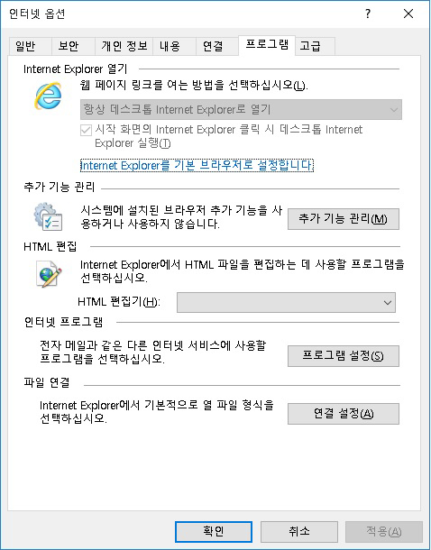
⑤ <Ctrl + Tab>키를 눌러 프로그램 페이지 탭으로 이동하여 <Tab>키를 눌러 <기본 프로그램 설정>버튼에서 엔터를 누릅니다.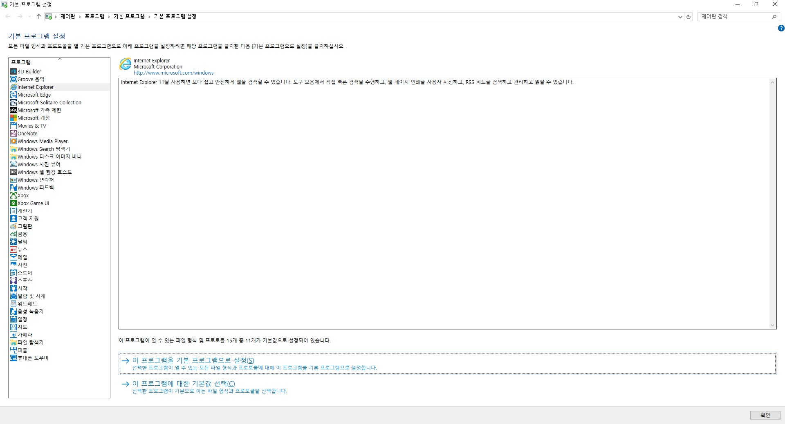
⑥ <Tab>를 여러번 눌러 프로그램 목록으로 이동하고 아래 방향키로 <Internet Explorer>에 맞춘뒤, <Alt + S>를 눌러 <기본 프로그램 설정>을 진행 합니다.